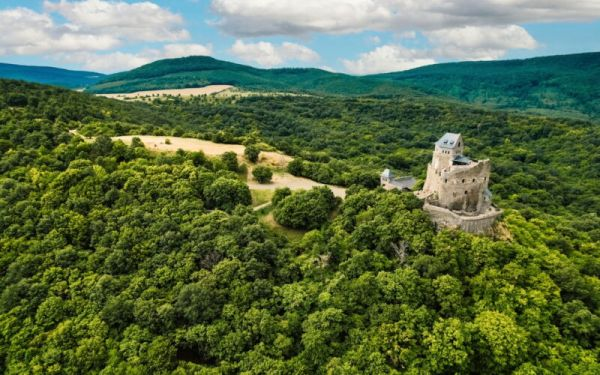

Csodás tájkép

Tükröződő fák a Duna mentén
Tiszai gát
Poroszló menti Tiszai gát
Börzsöny
Kilátás a fákra
Pléska-szikla
Pléska szikla felé úton az erdőben
Viadukt
Biatorbágyi viadukt egy út felett
Régi présház
Elhagyatott régi présház Biatorbágy fölött.
Nyakas kő
Innen ugratta Ördög nevű lovát a mélybe Sándor Móricz gróf.